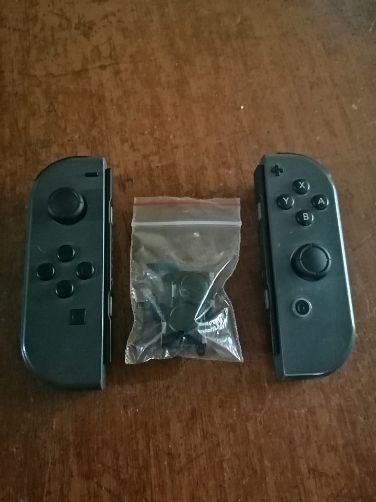
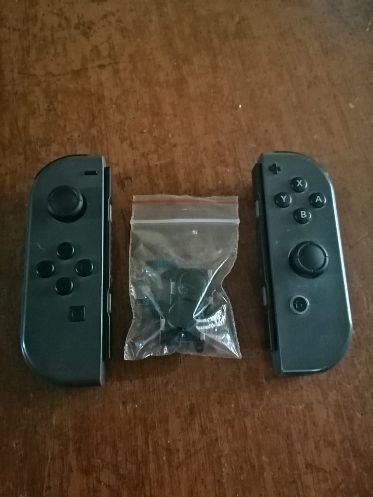

Bienvenido
Me llamo Joel Del Jesus Sanchez Quintal, me dedico a la reparacion de algunos componentes de la nintendo switch. Este es un blog donde informo los distintos precios que cobro por realizar el servicio de cambiado de piezas.
Piezas
Actualmente cambio distintas partes del control joycon, abajo dejo un listado de las piezas que cuento con el momento con el precio por realizar el servicio.
- Cambio de joycon: 200 pesos
 
